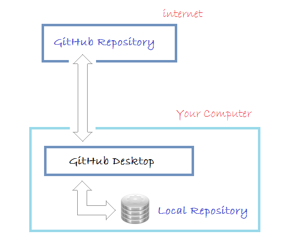

Để làm việc với GitHub bạn cần:
1. Đăng ký một tài khoản GitHub và tạo một Repository (GitHub Repository).
2. Cài đặt GitHub Desktop, một công cụ trực quan quản lý Local Repository (Kho chứa dữ liệu địa phương).
3. Cấu hình để có thể đồng bộ hóa dữ liệu bằng GitHub Desktop lên Repository server.
Hãy xem hình minh họa dưới đây:

Trước hết bạn cần phải đăng ký miễn phí một tài khoản GitHub. Bạn có thể vào trang chủ của GitHub tại:
Việc đăng ký một tài khoản là đơn giản, bạn chỉ cần nhập username/password và địa chỉ email. Sau khi đăng ký xong bạn cần vào Email kích hoạt tài khoản.
Sau khi đăng ký xong tài khoản GitHub, và đăng nhập vào. Bạn có thể tạo một GitHub Repository.
GitHub Desktop về bản chất là một công cụ trực quan cho phép bạn quản lý Local Repository (Kho chứa địa phương) trên máy tính của bạn.
Để download GitHub Desktop bạn vào địa chỉ: